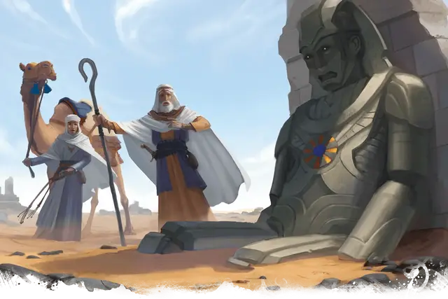

Сапфировый cтраж
Sapphire Sentinel
Большой Конструкт, без мировоззрения

Класс Доспеха 17 (природный доспех)
Хиты 178 (17к10 + 85)
Скорость 30 футов
| мод | спас | ||
|---|---|---|---|
| СИЛ | 22 | +6 | +6 |
| ЛОВ | 9 | −1 | −1 |
| ТЕЛ | 20 | +5 | +5 |
| мод | спас | ||
|---|---|---|---|
| ИНТ | 3 | −4 | −4 |
| МДР | 11 | +0 | +0 |
| ХАР | 1 | −5 | −5 |
Иммунитет к урону психическая энергия, яд; дробящий, колющий, рубящий от немагических атак, кроме нанесённых адамантиновым оружием
Иммунитет к состояниям паралич, очарование, отравление, окаменение, истощение, испуг
Чувства тёмное зрение 120 футов, пассивное Восприятие 10
Языки понимает Общий, но не говорит
Опасность 10 (5900 опыта)
Бонус мастерства +4
Особенности
Неизменяемая форма. Страж обладает иммунитетом ко всем заклинаниям и эффектам, изменяющим его форму.
Сопротивление магии. Страж совершает с преимуществом спасброски от заклинаний и прочих магических эффектов.
Магическое оружие. Атаки оружием стража являются магическими.
Особенности сапфирового стража. Страж обладает следующими особенностями:
• Он может открыть запечатанное хранилище, где покоится принц.
• Страж остается в небоевом режиме, если только не будет атакован первым.
Действия
Мультиатака. Страж совершает два размашистых удара.
Размашистый удар. Рукопашная атака оружием: +10 к попаданию, досягаемость 5 футов, одна цель. Попадание: Дробящий урон 19 (3к8 + 6).
Замедление (перезарядка 5–6). Страж нацеливается на одно или несколько существ, видимых в пределах 10 футов от себя. Все цели должны совершить спасбросок Мудрости Сл 17 от этой магии. При провале цель не может совершать реакции, её скорость уменьшается вдвое, и она не может совершать более одной атаки за свой ход. Кроме того, цель может в свой ход совершать либо действие, либо бонусное действие, но не то и другое. Эти эффекты длятся 1 минуту. Цель может повторять этот спасбросок в конце каждого своего хода, оканчивая эффект на себе при успехе.
Сапфир. В груди голема находится спрятанный за каменным диском сапфир диаметром 8 дюймов. На внешней поверхности диска начертан синий круг, с исходящими от него словно лучи солнца восемью золотыми лучами. Сапфир имеет 3 заряда. Действием, голем может потратить 1 заряд для накладывания заклинания рассеивание магии [dispel magic] (как заклинание 9-го уровня) с помощью сапфира, используя Телосложение в качестве базовой характеристики. Сапфир перестает светиться когда будут израсходованы все его заряды, но он ежедневно на рассвете восстанавливает 1к3 израсходованных заряда и снова начинает светится, когда у него есть 1 или более зарядов.
Описание
В пустыне Анаурох он наткнулся на блуждающего каменного голема. Алказаар предположил, что этот голем легендарный Сапфировый Страж, который, по слухам, был создан волшебниками-нетерезами для защиты одного из мифических Свитков Пустоты под надзором принца Хамукаи.
Сапфир
Находящийся в груди голема сапфир спрятан за каменным диском диаметром 8 дюймов. На внешней поверхности диска начертан синий круг, с исходящими от него словно лучи солнца восемью золотыми лучами.
Только когда голем получит команду использовать свою силу от кого-то, чьим командам он подчиняется (см."Привлечение Внимания Голема" ниже) можно будет демонтировать диск и увидеть светящийся сапфир, иначе оностаётся остается скрытым от глаз. Диаметр драгоценного камня 6 дюймов и у него следующие свойства:
- Он неразрушим до тех пор, пока голем не завершит свою миссию.
- Сапфир имеет 3 заряда. Действием, голем может потратить 1 заряд для накладывания заклинания рассеивание магии [dispel magic] (как заклинание 9-го уровня) с помощью сапфира, используя Телосложение в качестве базовой характеристики. Сапфир перестает светиться когда будут израсходованы все его заряды, но он ежедневно на рассвете восстанавливает 1к3 израсходованных заряда и снова начинает светится, когда у него есть 1 или более зарядов.
- Голем атакует любого, кто пытается удалить этот сапфир стоимостью 25 000 зм.
Привлечение Внимания Голема
Голем сильно подаётся вперёд, когда персонажи упоминают про Хамукаи. После произношения имени принца каменное лицо голема со скрежетом меняется на довольное выражение и загораются ярко глаза. После чего он привязывается к упомянувшему это имя персонажу и будет следовать за ним, подчиняясь его командам.
Также его активизируют попытки добраться и вытащить сапфир из груди, но он не слишком жалует воров. Если не остановится его провоцировать, то он будет сражаться насмерть.
Вырезанные и выдолбленные из камня в виде впечатляющих высоких статуй, каменные големы сильно различаются размером и формами. Хотя многие имеют черты гуманоидов, каменные големы могут быть вырезаны в любой форме, которую может представить скульптор. Древние каменные големы, найденные в закрытых гробницах или у ворот затерянных городов, иногда имеют форму гигантских зверей.
Как и другие големы, каменные големы почти невосприимчивы к заклинаниям и обычному оружию. Существа, сражающиеся с каменным големом, могут почувствовать слабость и замедление хода времени, как если бы они сами были сделаны из камня.
См. дополнительно статью: "Бестиарий: Големы"